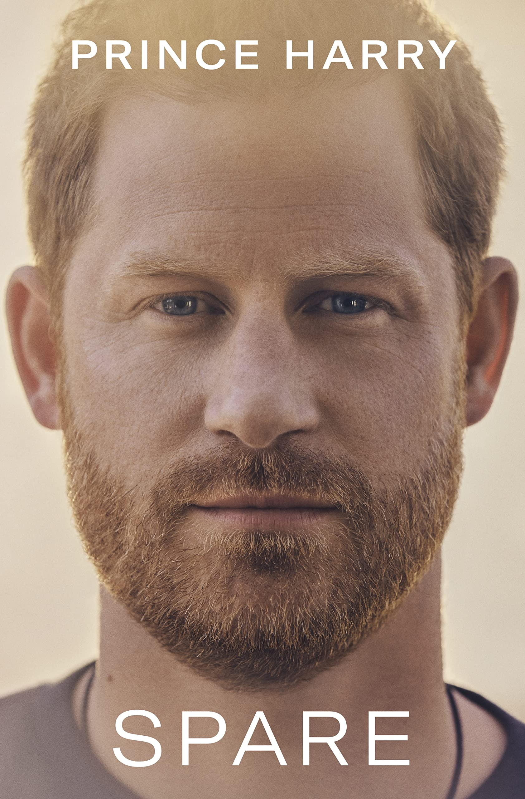
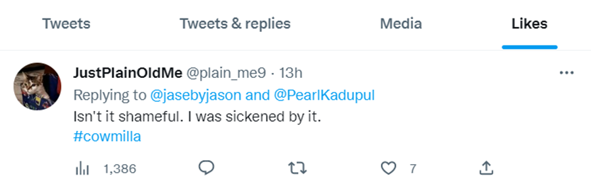

<!doctype html>

<html>
    
  <head>
      <title>Twitter's Impact on Public Opinion: An Analysis of the Response to Prince Harry's Book Spare</title>
	<link rel="icon" type="image/x-icon" href="/img/websiteIcon.ico">
      <meta charset="utf-8">
      <meta name="viewport" content="width=device-width, initial-scale=1">
      <link href="css/c3.min.css" rel="stylesheet" type="text/css">
      <link rel="preconnect" href="https://fonts.googleapis.com">
      <link rel="preconnect" href="https://fonts.gstatic.com" crossorigin>
      <link href="https://fonts.googleapis.com/css2?family=Roboto&display=swap" rel="stylesheet">
      <link rel="stylesheet" href="css/uikit.min.css" />
      <link rel="stylesheet" href="css/CW2.css">
      <script src="js/uikit.min.js"></script>
      <script src="js/uikit-icons.min.js"></script>

        
	
    
  </head>
 
  <body>

    <div class="wrapper"
  		<div id="intro">
  			<h1>Twitter's Impact on Public Opinion: An Analysis of the Response to Prince Harry's Book Spare</h1>
  			<p class="byline">by Pei Heng Ma</p>
  		</div>
    </div>
    
    <div class="uk-container uk-width-5-6">
      <div class="uk-background-default uk-dark uk-padding-large">
        <p>Twitter popularity has grown significantly over the years, especially after it was acquired by the billionaire and the founder of SpaceX and Tesla Elon Musk. Its influence has also been tested in many cases, most notably being President Donald Trump using his social media presence on Twitter to help win <a href="https://cepr.org/voxeu/columns/how-twitter-affected-2016-presidential-election">his election in 2016</a>.</p>
        
        
        
        <p>Recently, Prince Harry has caused stir with the release of his latest book <i>Spare</i>. By analyzing tweets about this incident, journalists and publications can gain a better understanding of public opinion. This analysis can provide a better insight into how people view the Royal Family in the wake of a scandal, allowing journalists and publications to better tailor their coverage to the public’s interest.</p>
        
        <p>The streaming of Harry & Meghan on Netflix caused a big uproar, and the release of Prince Harry's book, Spare, on Twitter further stirred up controversy. Analyzing tweets on the day of publication and the day before it can give us a better understanding of how, when and why the people of the UK responded to Prince Harry's claims and divulging of the Royal Family's secrets.</p>
        
        <h2>Data Scraping</h2>
        
        <p>I examined the Twitter Explore page and observed that Spare had begun several trending hashtags, including #Spare, #SparebyPrinceHarry, and #SpareUsHarry. After reviewing each of them, I selected #SparebyPrinceHarry as it was more precise for analyzing purpose and had the highest number of tweets.</p>
        
        <p>With the help of TAGS and the Twitter API, I collected data from 11 am on January 9, 2023 to 9 pm on January 10, 2023. I obtained 17,807 tweets from 7,933 unique users.</p>
        
        <div id="tweeterVolume"></div>

        <p>The above histogram shows that most users only tweet once regarding the subject. Tweeters who tweeted more than 2 times dropped significantly and 3.5% (272) of overall tweeters posted more than 10 times.</p>

        <h2>Tweet Rate</h2>
        
        <p>Following the official release of the book, many news outlets began barraging Twitter with news reports, among which the post by @SkyNews received over 2.5 million views. By focusing on the tweets within this timeframe, the data can show some interesting results.</p>
        
        <blockquote class="twitter-tweet"><p lang="en" dir="ltr">Prince Harry&#39;s book Spare is &#39;fastest-selling non-fiction book ever&#39; <a href="https://t.co/hGHIp3lsWj">https://t.co/hGHIp3lsWj</a></p>&mdash; Sky News (@SkyNews) <a href="https://twitter.com/SkyNews/status/1612856960533106701?ref_src=twsrc%5Etfw">January 10, 2023</a></blockquote> <script async src="https://platform.twitter.com/widgets.js" charset="utf-8"></script>

        <div id="timeSeries"></div>

        <p>On average, there are 508 tweets within the data period. The day before the release of the book, there was a sharp increase in tweets from 11 am to 12 pm, from 42 tweets to 460 tweets. On the day of release, from 3 to 7 pm, tweet count soared presumably due to the evening broadcasting of major news channels such as ITV, Sky News and the BBC. </p>

        <div id="rtToOtRate"></div>

        <p>In a study done by Naskar et al. (2020) on the emotion dynamics of Twitter users, when a user alters their emotional state, retweets have the greatest impact, with an average of 81% across all changes. Starting from 12 pm January 9, there has been a significant gap between retweet and original tweet rates. On average, the ratio of retweet to original tweet is 3.6 to 1. The biggest gap happened in 7 pm January 10, where retweets were nearly 6 times more than original tweets.
        </p>

        <p>
          This analysis is useful for journalists to see how the public react prior to and after an event. This insight can also be used to see how the public emotion changes when the retweet rate is disproportionately larger than original tweets. 
        </p>

        <div id="rtToOtPie"></div>

        <p>
          According to Cai et al. (2014), retweeting behavior is shown to increase exponentially during mass emergencies or social breaking news, indicating that a threshold or tipping point is a key environmental factor influencing the intention to retweet.
        </p>

        <p>
          This analysis shows that the release of Spare reaches the tipping point, so it is crucial for journalists to observe the impact of the event on the public's retweeting behavior and how it affects their opinions.
        </p>

        <h2>The Tweeters</h2>

        <p>As a journalist examines an event, it is useful to observe the people who are sharing information about it on Twitter. By identifying the most active tweeters, a journalist can gain insight into the message being communicated to others following the event and determine if there is any effort to mislead the public.
        </p>

        <div id="retweetTweetRate"></div>

        <p>The top tweeters contributed to 3.5% of the overall tweets.</p>

        <p>Looking at the top tweeters, it is obvious most of them retweeted rather than posting original tweets. This further proves the power of retweets whether the users themselves are aware or not. Among the top tweeters, there is only one exception. The account <i>@brewerelac</i> is located in the UK and appears to be a firm supporter for Prince Harry and his wife.</p>

        <p>The tweeter that has the most following is <i>@MvelaseP</i>, with 5,191 followers. Interestingly the one with the least following is <i>@YvonneD16015247</i>, with only 2 follower, but the account contributed the most in the chart. </p>

        <h2>Who's the Robot?</h2>

        <div><table>
          <tr>
            <th>USERNAME</th>
            <th>TOTAL TWEET COUNT</th>
            <th>BOTOMETER</th>
            <th>JOIN TIME</th>
            <th>TWEETS PER DAY</th>
            <th>HISTORY TWEET COUNT</th>
            <th>LIKE/TWEET RATE</th>
          </tr>
          <tr>
            <td>@YvonneD16015247</td>
            <td>109</td>
            <td>2/5</td>
            <td>Dec-22</td>
            <td>24.9</td>
            <td>996</td>
            <td>0.54</td>
          </tr>
          <tr>
            <td>@brewerelac</td>
            <td>90</td>
            <td>0.8/5</td>
            <td>Nov-08</td>
            <td>1.777520725</td>
            <td>9,220</td>
            <td>0.99</td>
          </tr>
          <tr>
            <td>@abgweth</td>
            <td>58</td>
            <td>1.4/5</td>
            <td>Oct-19</td>
            <td>210.4437968</td>
            <td>252,743</td>
            <td>0.89</td>
          </tr>
          <tr>
            <td>@DadakeTina</td>
            <td>56</td>
            <td>1.8/5</td>
            <td>Jul-12</td>
            <td>70.89659652</td>
            <td>272,881</td>
            <td>1.41</td>
          </tr>
          <tr>
            <td>@TatuTHIRD3</td>
            <td>55</td>
            <td>0.6/5</td>
            <td>Jan-20</td>
            <td>21.24797115</td>
            <td>23,564</td>
            <td>7.36</td>
          </tr>
          <tr>
            <td>@Patrici81460203</td>
            <td>55</td>
            <td>1.4/5</td>
            <td>Mar-22</td>
            <td>16.97805643</td>
            <td>5,416</td>
            <td>1.08</td>
          </tr>
          <tr>
            <td>@Hannah_786_sa</td>
            <td>53</td>
            <td>3.5/5</td>
            <td>May-21</td>
            <td>355.0898876</td>
            <td>221,221</td>
            <td>1.02</td>
          </tr>
          <tr>
            <td>@WeezYbloomix</td>
            <td>53</td>
            <td>2.3/5</td>
            <td>Oct-21</td>
            <td>170.8234043</td>
            <td>80,287</td>
            <td>0.59</td>
          </tr>
          <tr>
            <td>@soletiole2912</td>
            <td>50</td>
            <td>1.4/5</td>
            <td>Oct-19</td>
            <td>235.3588676</td>
            <td>282,666</td>
            <td>0.96</td>
          </tr>
          <tr>
            <td>@Sil31966396</td>
            <td>48</td>
            <td>1.6/5</td>
            <td>Oct-21</td>
            <td>78.5787234</td>
            <td>36,932</td>
            <td>3.57</td>
          </tr>
        </table></div>
        
        <p>According to the Botometer scores, most accounts do not seem to be bots. There are only 3 accounts scored over 2. Despite having low scores on average, a cross examination on their account creation date, history tweet counts and other conditions, we can have a clearer picture of bot distribution in this data set.</p>

        <p>First, I retrieved or calculated the following necessary data for later analysis: account creation date, day count from account creation date, history tweet count, tweet count per day, history like count, and the like/tweet rate. </p>

        <p>Next I looked at the sheer amount of tweet posted since the accounts were created. The result revealed that 4 accounts @abgweth, @DadakeTina, @Hannah_786_sa, and @soletiole2912 all have posted over 220,000 tweets. Out of all 4, only @DadakeTina was created in back in 2012, while the rest were created in the last 3 years. I then further divided the tweet count by the days these account have existed, the result shows the amount of tweets posted per day.</p>
          
        <p>Out of 4, only @DadakeTina was created back in 2012, while the other 3 were created in the last three years. This means on average, they all posted over 200 tweets per day, without exception. With this analysis, it is safe to say they are bots.</p>

        <p>Continuing the tweets per day analysis, we can see that @WeezYbloomix also displays an irregularly high frequency on tweet posts, with 171 tweets per day since Oct 2021. So this account is also a bot.</p>

        <p>According to a study by Gilani et al.(2019) on bot behaviors on Twitter, there are several other factors that can help us identify bots in this analysis:
          <ol>1. Bots tend to retweet more often than humans</ol>
          <ol>2. Bots post more URLs in their tweets</ol>
          <ol>3. Humans receive more likes and retweets than bots</ol>
          <ol>4. Bots post a significant proportion of content via the uploading of media</ol>
          </p>

          <p>With the conditions above, we can examine the last 5 accounts:</p>
        <div><table>
          <tr>
            <th></th>
            <th>RETWEET RATIO</th>
            <th>URLs %</th>
            <th>LIKE/TWEET RATE</th>
            <th>BOT?</th>
          </tr>
          <tr>
            <td>@YvonneD16015247</td>
            <td>99%</td>
            <td>60%</td>
            <td>0.54</td>
            <td>YES</td>
          </tr>
          <tr>
            <td>@Patrici81460203</td>
            <td>99%</td>
            <td>69%</td>
            <td>1.08</td>
            <td>YES</td>
          </tr>
          <tr>
            <td>@brewerelac</td>
            <td>62%</td>
            <td>91%</td>
            <td>0.99</td>
            <td>MAYBE</td>
          </tr>
          <tr>
            <td>@TatuTHIRD3</td>
            <td>93%</td>
            <td>90%</td>
            <td>7.36</td>
            <td>MAYBE</td>
          </tr>
          <tr>
            <td>@Sil31966396</td>
            <td>92%</td>
            <td>68%</td>
            <td>3.57</td>
            <td>MAYBE</td>
          </tr>
          </table></div>
        
        
        <p>With the table above, if an account fit all 3 conditions, it is very likely to be a bot. If it only fits 2 conditions, though the chance is lower, it may still be a bot. </p>
        
        <h2>Demographic</h2>

        <p>While researching each of the top ten tweeters, I also checked their most recent posts, the accounts they are following, and the content they liked. </p>

        <p>Based on these three pieces of information, I quickly discovered some patterns that further proves these accounts are not operated by real humans and were possibly created for a possible purpose: shifting narrative.</p>

        <p>As all of the top ten tweeters have demonstrated traits of bot behaviors, these accounts also focus exclusively on the only the topics related to the Harry and Meghan. 
          Using the top tweeter @YvonneD16015247 for example, the 109 retweets within the collection period were all related to Harry:
          </p>
        
        

        <p>The same applies to the accounts it follows. Many of them openly express support for Harry and Meghan in their profile description:</p>

        
        
        <p>Lastly, the account only likes posts that show support towards Prince Harry while criticizing Camilla:</p>

        <p>By analyzing the top ten tweeters' pages, we observe a consistent pattern, which enables us to understand how Twitter accounts are employed to propagate particular narratives to a broad audience, and potentially alter their perspectives.</p>

        <h2>Top Retweet</h2>

        <p>As the importance of retweet has been examined, it is also crucial to look at the top retweet in order to gain insight into public opinion. By analyzing the content, journalists can gain a sense of how a large portion of people are responding to a particular story or issue.</p>

        

        <p>By analyzing the top ten tweeters' pages, we observe a consistent pattern, which enables us to understand how Twitter accounts are employed to propagate particular narratives to a broad audience, and potentially alter their perspectives.</p>

        <h2>Top Retweet</h2>

        <p>As the importance of retweet has been examined, it is also crucial to look at the top retweet in order to gain insight into public opinion. By analyzing the content, journalists can gain a sense of how a large portion of people are responding to a particular story or issue.</p>

        

        <p>The top retweet weigh in heavily on the abuse Prince Harry claimed his wife and he have received from his father. This is unsurprising as all the top ten tweeters also focused on this issue and were in favor of Harry & Meghan. </p>

        <h2>Word Cloud</h2>

        <p>Using python Wordcloud library, I was able to create a simple word cloud to show the most frequent words used in all the tweets collected. However, the raw data contains many meaningless words and would make the final result inaccurate. So I first removed the duplicated tweets and then added a list of stopwords to prevent this. </p>

          

        <p>The final result shows that besides the tag #SparebyPrinceHarry, there are also other key words and hashtags used in these tweets, including “#Spare”, “#RoyalFamily”, and “#Meghan”.</p>

        <h2>Location</h2>

        <p>As Twitter has stop providing geo coordinates, it is impossible to pin down the exact location where tweets were sent. Users can voluntarily add their location information to their tweets. </p>

        <div id="locationPie"></div>
        
        <p>This pie chart shows the amount of users who willingly provided their location information. However, this information can be bogus as they can add whatever location they wish, resulting in a multitude of meaningless locations, such as “Earth”, “🌎”, or “In the Desert”.</p>

        <h2>Conclusion</h2>

        <p>In conclusion, by analyzing tweets about the release of Prince Harry's book <i>Spare</i> on Twitter, journalists and publications can gain a better understanding of public opinion about the Royal Family in the wake of recent controversies.</p>

        <p>The data collected from tweets using the hashtag #SparebyPrinceHarry shows that there was a significant spike in tweets on the day of the book's release, with an average of 508 tweets within the data period. The analysis also showed that there was a significant gap between retweet and original tweet rates, with retweets being nearly 6 times more than original tweets at the peak.</p>

        <p> The increase in retweeting behavior indicates that the release of the book reached a "tipping point" in terms of public interest and attention. it is evident that the demographic heavily concentrates on individuals who are invested in the Royal Family, specifically those who are supporters of Harry and Meghan. This could suggest an attempt to advance certain narratives and potentially influence public opinion.</p>

        <p>This analysis provides valuable insights for us to understand and report on public opinion about the Royal Family. By identifying patterns and trends in the tweets, we can better tailor the coverage to the public's interests and respond to the changing public sentiment. However, it is important to note that this analysis is based on a limited dataset of tweets and may not reflect the full range of public opinion.</p>

        <h2>References</h2>
        <div id="reference"></div>
          <p>Cai, Yuanfeng and Zhu, Dan, Understanding Factors Influencing Users’ Retweeting Behavior -- A Theoretical Perspective (January 30, 2014). Available at SSRN: https://ssrn.com/abstract=2388534 or http://dx.doi.org/10.2139/ssrn.2388534</p>

          <p>Debashis Naskar, Sanasam Ranbir Singh, Durgesh Kumar, Sukumar Nandi, and Eva Onaindia de la Rivaherrera. 2020. Emotion Dynamics of Public Opinions on Twitter. ACM Trans. Inf. Syst. 38, 2, Article 18 (March
            2020), 24 pages. https://doi.org/10.1145/3379340</p>

          <p>Zafar Gilani, Reza Farahbakhsh, Gareth Tyson, and Jon Crowcroft. 2019. A Large-scale Behavioural Analysis
            of Bots and Humans on Twitter. ACM Trans. Web 13, 1, Article 7 (February 2019), 23 pages.
            https://doi.org/10.1145/3298789</p>

          <p style="color: grey; font-style: italic;">Pei Heng Ma, 2023. Design: HTML5 Charts produced using <a href="https://c3js.org/" target="_blank">C3.js</a></p>
      </div>
    </div>


  
  <div >
      
      <script src="https://d3js.org/d3.v5.min.js"></script>
      <script src="js/c3.min.js"></script>
      <script src="js/main.js"></script>
      <script src="js/CW2.js"></script>

  </div>

</body>

</html>
